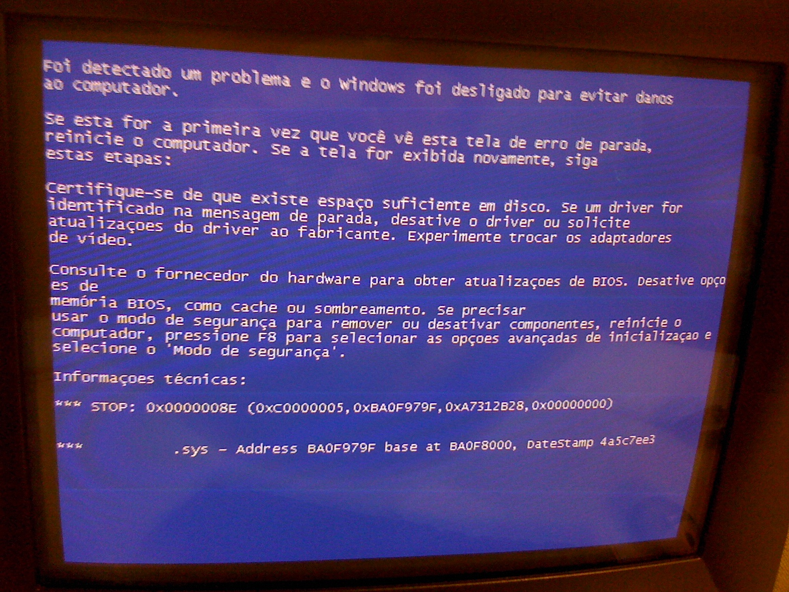
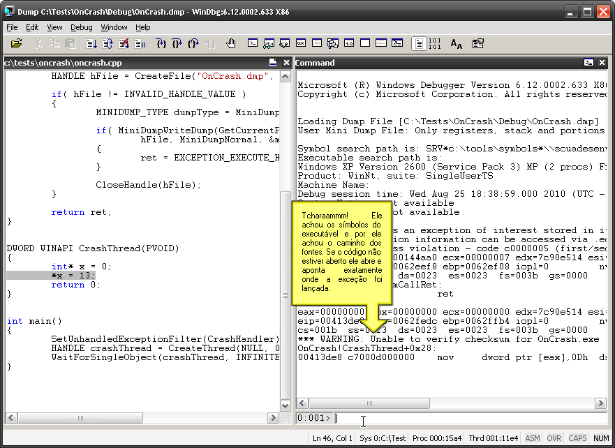

- Como achar o código-fonte sem símbolos
- Novas diferenças no Bazaar
- A Origem (Christopher Nolan, 2010)
- Não é minha culpa
- Foto dos melhores momentos
- Superman: O Filme (Richard Donner, 1978)
- Os Mercenários (Sylvester Stallone, 2010)
- Evento C++
- Domicilio Conjugal
- Gerando dumps automatizados
- Karate Kid
- Um Lugar Chamado Notting Hill
- Como ofuscar strings
# Como achar o código-fonte sem símbolos
Caloni, 2010-08-03 <computer> [up] [copy]Continuo escovando bits. Dessa vez de forma mais nervosa. Se trata de um serviço que trava durante seu stop. Um colega muito esperto do suporte gerou um dump para mim, tornando as coisas mais fáceis. O problema era que não havia símbolos nem código-fonte que batessem exatamente com aquela compilação de 2004. Solução? Analisar as pilhas das threads restantes.
É sabido que esse serviço responde requisições de milhares de máquinas em um período curto de tempo, então por isso a primeira coisa que me atentei foi verificar quantas threads haviam:
0:000> ~*
. 0 Id: 4c8.30c Suspend: 1 Teb: 7ffde000 Unfrozen
Start: *** WARNING: Unable to verify checksum for Service.exe
*** ERROR: Module load completed but symbols could not be loaded for Service.exe
Service+0xc60c (0040c60c)
Priority: 0 Priority class: 32 Affinity: f
1 Id: 4c8.4d8 Suspend: 1 Teb: 7ffdd000 Unfrozen
Start: ADVAPI32!AccessCheckByTypeResultListAndAudit(...)
Priority: 0 Priority class: 32 Affinity: f
2 Id: 4c8.580 Suspend: 1 Teb: 7ffdc000 Unfrozen
Priority: 0 Priority class: 32 Affinity: f
3 Id: 4c8.adc Suspend: 1 Teb: 7ffd9000 Unfrozen
Start: rtutils!TraceServerThread (778321fe)
Priority: 0 Priority class: 32 Affinity: f
4 Id: 4c8.f1c Suspend: 1 Teb: 7ffa5000 Unfrozen
Start: rpcrt4!ThreadStartRoutine (77d37e70)
Priority: 0 Priority class: 32 Affinity: f
...
1426 Id: 4c8.1464 Suspend: 1 Teb: 7fa0c000 Unfrozen
Start: rpcrt4!ThreadStartRoutine (77d37e70)
Priority: 0 Priority class: 32 Affinity: f
1427 Id: 4c8.144c Suspend: 1 Teb: 7fa0b000 Unfrozen
Start: rpcrt4!ThreadStartRoutine (77d37e70)
Priority: 0 Priority class: 32 Affinity: f
1428 Id: 4c8.12dc Suspend: 1 Teb: 7fa09000 Unfrozen
Start: rpcrt4!ThreadStartRoutine (77d37e70)
Priority: 0 Priority class: 32 Affinity: f
1429 Id: 4c8.1410 Suspend: 1 Teb: 7fa08000 Unfrozen
Start: rpcrt4!ThreadStartRoutine (77d37e70)
Priority: 0 Priority class: 32 Affinity: f
1430 Id: 4c8.143c Suspend: 1 Teb: 7fa06000 Unfrozen
Priority: 0 Priority class: 32 Affinity: f
São muitas.
Analisar essa quantidade absurda de threads seria um saco. Além de inútil. Foi por isso deus inventou a função **!uniqstack**, que encontra automagicamente quais threads estão com a pilha duplicada.
0:000> !uniqstack
Processing 1431 threads, please wait
. 0 Id: 4c8.30c Suspend: 1 Teb: 7ffde000 Unfrozen
Start: Service+0xc60c (0040c60c)
Priority: 0 Priority class: 32 Affinity: f
ChildEBP RetAddr
0012f9f8 7c586381 NTDLL!ZwReadFile+0xb
0012fa6c 7c2dd578 KERNEL32!ReadFile+0x181
...
0012fff0 00000000 KERNEL32!BaseProcessStart+0x3d
. 1 Id: 4c8.4d8 Suspend: 1 Teb: 7ffdd000 Unfrozen
Start: ADVAPI32!AccessCheckByTypeResultListAndAudit(...)
Priority: 0 Priority class: 32 Affinity: f
ChildEBP RetAddr
00cefec0 7c59a0a2 NTDLL!ZwWaitForSingleObject+0xb
...
00cf000c 007a0000 0x1366e0
00cf000c 00000000 0x7a0000
. 2 Id: 4c8.580 Suspend: 1 Teb: 7ffdc000 Unfrozen
Priority: 0 Priority class: 32 Affinity: f
ChildEBP RetAddr
010efe24 77d59815 NTDLL!ZwReplyWaitReceivePortEx+0xb
...
010effec 00000000 KERNEL32!BaseThreadStart+0x52
. 3 Id: 4c8.adc Suspend: 1 Teb: 7ffd9000 Unfrozen
Start: rtutils!TraceServerThread (778321fe)
Priority: 0 Priority class: 32 Affinity: f
ChildEBP RetAddr
0150fd20 7c59a26d NTDLL!ZwWaitForMultipleObjects+0xb
...
0150ffec 00000000 KERNEL32!BaseThreadStart+0x52
...
.1430 Id: 4c8.143c Suspend: 1 Teb: 7fa06000 Unfrozen
Priority: 0 Priority class: 32 Affinity: f
ChildEBP RetAddr
6665f0dc 7c59a0a2 NTDLL!ZwWaitForSingleObject+0xb
...
6665ffec 00000000 KERNEL32!BaseThreadStart+0x52
Total threads: 1431
Duplicate callstacks: 1092 (windbg thread #s follow):
7, 9, 11, 12, 13, 14, 15, 17, 18, 20, 21, (...), 1428, 1429
Muitas threads duplicadas. Isso quer dizer que podemos nos focar na pilha de uma delas. Basta pegar uma.
0:000> ~1429 kv ChildEBP RetAddr Args to Child 6645f334 7c59a0a2 ... NTDLL!ZwWaitForSingleObject+0xb (FPO: [3,0,0]) 6645f35c 7c57b40f ... KERNEL32!WaitForSingleObjectEx+0x71 (FPO: [Non-Fpo]) 6645f36c 004054c3 ... KERNEL32!WaitForSingleObject+0xf (FPO: [2,0,0]) WARNING: Stack unwind information not available. Following frames may be wrong. 6645f690 004060ec ... Service+0x54c3 6645f764 77d79970 Service+0x60ec6645f788 ... 77d96460 ... rpcrt4!Invoke+0x30 6645f7a0 77d9637a ... rpcrt4!NdrCallServerManager+0x15 (FPO: [4,0,2]) 6645fa90 77d9076f ... rpcrt4!NdrStubCall+0x200 (FPO: [Non-Fpo]) 6645faf4 7cef55fd ... rpcrt4!CStdStubBuffer_Invoke+0xc1 (FPO: [Non-Fpo]) 6645fb38 7cef58d8 ... OLE32!SyncStubInvoke+0x61 (FPO: [Non-Fpo]) 6645fb80 7ce8833d ... OLE32!StubInvoke+0xa8 (FPO: [Non-Fpo]) 6645fbe4 7ce7a711 ... OLE32!CCtxComChnl::ContextInvoke+0xbb (FPO: [Non-Fpo]) 6645fc00 7cef54e2 ... OLE32!MTAInvoke+0x18 (FPO: [Non-Fpo]) 6645fc30 7cef5c06 ... OLE32!AppInvoke+0xb5 (FPO: [Non-Fpo]) 6645fcf0 7cef3360 ... OLE32!ComInvokeWithLockAndIPID+0x297 (FPO: [Non-Fpo]) 6645fd30 77d545b1 ... OLE32!ThreadInvoke+0x1b7 (FPO: [Non-Fpo]) 6645fd68 77d39463 ... rpcrt4!DispatchToStubInC+0x32 (FPO: [Non-Fpo]) 6645fdc0 77d39337 ... rpcrt4!RPC_INTERFACE::DispatchToStubWorker+0x100 (FPO: [Non-Fpo]) 6645fde0 77d39603 ... rpcrt4!RPC_INTERFACE::DispatchToStub+0x5e (FPO: [Non-Fpo]) 6645fe10 77d4740d ... rpcrt4!RPC_INTERFACE::DispatchToStubWithObject+0xa9 (FPO: [Non-Fpo]) 6645fe44 77d47634 ... rpcrt4!OSF_SCALL::DispatchHelper+0xa1 (FPO: [Non-Fpo]) 6645fe58 77d46f3b ... rpcrt4!OSF_SCALL::DispatchRPCCall+0x121 (FPO: [Non-Fpo]) 6645fe90 77d466ac ... rpcrt4!OSF_SCALL::ProcessReceivedPDU+0x68f (FPO: [Non-Fpo]) 6645feb0 77d48730 ... rpcrt4!OSF_SCALL::BeginRpcCall+0x183 (FPO: [Uses EBP] [2,0,4]) 6645ff10 77d5154b ... rpcrt4!OSF_SCONNECTION::ProcessReceiveComplete+0x326 (FPO: [Non-Fpo]) 6645ff20 77d516b8 ... rpcrt4!ProcessConnectionServerReceivedEvent+0x1b (FPO: [7,0,0]) 6645ff74 77d514bd ... rpcrt4!LOADABLE_TRANSPORT::ProcessIOEvents+0xcd (FPO: [Non-Fpo]) 6645ff78 77d3af8d ... rpcrt4!ProcessIOEventsWrapper+0x9 (FPO: [1,0,0]) 6645ffa8 77d37e88 ... rpcrt4!BaseCachedThreadRoutine+0x4f (FPO: [Non-Fpo]) 6645ffb4 7c57b3bc ... rpcrt4!ThreadStartRoutine+0x18 (FPO: [Non-Fpo]) 6645ffec 00000000 ... KERNEL32!BaseThreadStart+0x52 (FPO: [Non-Fpo])
Através das funções de RPC e OLE32 podemos concluir que se trata de uma chamada direta para uma interface COM. Bom, existem centenas de métodos e dezenas de interfaces nesse serviço, tornando mais fácil tentar desmontar a chamada inicial que o rpcrt4 faz ao nosso módulo.
0:000> ub 77d79970 rpcrt4!Invoke+0x20: 77d79960 fd std 77d79961 f3a5 rep movs dword ptr es:[edi],dword ptr [esi] 77d79963 8b45f4 mov eax,dword ptr [ebp-0Ch] 77d79966 50 push eax 77d79967 669d popf 77d79969 669d popf 77d7996b 8b4508 mov eax, dword ptr [ebp+8] 77d7996e ffd0 call eax
Nossa função é obtida em ebp+8. Podemos obter esse endereço pelo campo **ChildEBP **da função em questão.
0:000> dd 6645f788 +8 l1 6645f790 00406061 0:000> uf 00406061 Service+0x6061: 00406061 55 push ebp 00406062 8bec mov ebp,esp 00406064 81ecc8000000 sub esp,0C8h 0040606a 833db09f410000 cmp dword ptr [Service+0x19fb0 (00419fb0)],0 00406071 751b jne Service+0x608e (0040608e) Service+0x6073: 00406073 6a00 push 0 00406075 6860514100 push offset Service+0x15160 (00415160) 0040607a b9609e4100 mov ecx,offset Service+0x19e60 (00419e60) 0040607f e822080000 call Service+0x68a6 (004068a6) 00406084 8b4514 mov eax,dword ptr [ebp+14h] 00406087 66c7002f00 mov word ptr [eax],2Fh 0040608c eb65 jmp Service+0x60f3 (004060f3) Service+0x608e: 0040608e 56 push esi 0040608f 8b7508 mov esi,dword ptr [ebp+8] 00406092 837e5200 cmp dword ptr [esi+52h],0 00406096 7430 je Service+0x60c8 (004060c8) Service+0x6098: 00406098 8d8538ffffff lea eax,[ebp-0C8h] 0040609e 6830514100 push offset Service+0x15130 (00415130) 004060a3 50 push eax 004060a4 e85f4d0000 call Service+0xae08 (0040ae08) 004060a9 59 pop ecx 004060aa 59 pop ecx 004060ab 6a00 push 0 004060ad 8d8538ffffff lea eax,[ebp-0C8h] 004060b3 50 push eax 004060b4 b9609e4100 mov ecx,offset Service+0x19e60 (00419e60) 004060b9 e8e8070000 call Service+0x68a6 (004068a6) 004060be 8b4514 mov eax,dword ptr [ebp+14h] 004060c1 66c7000a40 mov word ptr [eax],400Ah 004060c6 eb2a jmp Service+0x60f2 (004060f2) Service+0x60c8: 004060c8 6804010000 push 104h 004060cd 8d868c010000 lea eax,[esi+18Ch] 004060d3 50 push eax 004060d4 ff750c push dword ptr [ebp+0Ch] 004060d7 ff158c304100 call dword ptr [Service+0x1308c (0041308c)] 004060dd 668b4510 mov ax,word ptr [ebp+10h] 004060e1 8bce mov ecx,esi 004060e3 66894648 mov word ptr [esi+48h],ax 004060e7 e892f2ffff call Service+0x537e (0040537e) 004060ec 8b4d14 mov ecx,dword ptr [ebp+14h] 004060ef 668901 mov word ptr [ecx],ax Service+0x60f2: 004060f2 5e pop esi Service+0x60f3: 004060f3 33c0 xor eax,eax 004060f5 c9 leave 004060f6 c21000 ret 10h
Note como a função compara algo com zero. Caso não seja zero ela continua. Caso contrário ela vai para um ponto que chama uma função interna e move um código de erro para um ponteiro recebido como parâmetro, o que é muito normal, se lembrarmos que as funções COM de um programa em C devem retornar o código da chamada no retorno (S_OK) e o código de erro em um lResult da vida.
STDMETHODIMP CService::Open(<params>, PLONG *pctReturn)
{
if( DeuErrado() )
{
*pctReturn = ERR_DEU_ERRADO;
return S_OK;
}
//...
}
O código retornado é 2Fh, e agora temos uma boa pista para encontrar a localização no fonte. A primeira coisa é encontrar o define responsável por esse erro, o que exige um pouco de familiaridade com o sistema, pois não se trata aqui de um código Windows.
#define OSRL_ERR 44 /* Data file serial number overflow */ #define KLEN_ERR 45 /* Key length exceeds MAXLEN parameter */ #define FUSE_ERR 46 /* File number already in use */ #define FINT_ERR 47 /* database has not been initialized */ #define FMOD_ERR 48 /* Operation incompatible with type of file */ #define FSAV_ERR 49 /* Could not save file */ #define LNOD_ERR 50 /* Could not lock node */
Ótimo. 2F, para os leigos (leigos? o que vocês estão fazendo aqui?), é 47 em decimal, exatamente nosso código listado acima. Com esse define podemos agora procurar no código-fonte e analisar todas as funções que retornam esse código em seu início. Para nossa sorte, existe apenas uma.
STDMETHODIMP CService::Open(BYTE *fileName, COUNT keyNo, COUNT *pctReturn)
{
char szMsg[200];
// Verifica se o banco de dados foi inicializado
if (!_Main.m_bDBInitialized)
{
_Main.Log("Error opening file before database to be initialized.");
*pctReturn = FINT_ERR;
return S_OK;
}
// Verifica se o arquivo já foi aberto
if (m_pData)
{
sprintf(szMsg, "Error on open file \"%s\". File already opened.");
_Main.Log(szMsg);
*pctReturn = ERR_BLABLABLA;
return S_OK;
}
//...
}
Para confirmar que não estamos sonhando, podemos dar uma olhada no parâmetro passado para a função Log antes do código retornar. A memória deverá conter uma string idêntica a do código-fonte.
Service+0x6073: 00406073 6a00 push 0 00406075 6860514100 push offset Service+0x15160 (00415160) 0040607a b9609e4100 mov ecx,offset Service+0x19e60 (00419e60) 0040607f e822080000 call Service+0x68a6 (004068a6) 00406084 8b4514 mov eax,dword ptr [ebp+14h] 00406087 66c7002f00 mov word ptr [eax],2Fh 0040608c eb65 jmp Service+0x60f3 (004060f3) 0:000> da 00415160 00415160 "Error opening file before databa" 00415180 "se to be initialized."
E, agora sim, encontramos o culpado!
Mais para a frente em minha análise consegui encontrar o objeto pelo qual todas as threads esperavam. Não tive tanta sorte, pois se tratava de um mutex, e mutexes não conseguem ser rastreados tão facilmente em user mode. Mas isso não vem ao caso. O que tentei descrever aqui foi mais ou menos o processo que você deverá seguir caso tenha que analisar um binário compilado em outras vidas. Espero que você tenha tanta sorte quanto eu.
# Novas diferenças no Bazaar
Caloni, 2010-08-04 [up] [copy]Novidade incrível nas novas versões do Bazaar. Dando continuidade à sua versão boiola gráfica, agora é possível configurar quantos visualizadores de diferenças você quiser. Na hora de ver a diferença em algum código-fonte, você pode optar pelo enrustido embutido ou, no caso, o meu favorito, WinMerge.
E por que o WinMerge é meu favorito? Porque você pode ignorar toda aquela discussão se devemos usar tabs ou três espaços para indentar o código. Cada um indenta como quer, na hora que mexer no código, que o WinMerge não vai nem ligar para essas diferencinhas (já que o compilador não liga). Ele até detecta blocos de código inteiros que foram movidos dentro do arquivo.
Na hora de ver as diferenças no worktree podemos usar a velha opção de criar um alias para o WinMerge. Mas no meio de um log, podemos ativar tanto o view embutido quanto o de qualquer outra ferramenta que escolhermos.
Vendo essas coisas fico imaginando como ainda tem gente que usa arquivos zip com data para armazenar versões de documentos diferentes. Tsc, tsc.
# A Origem (Christopher Nolan, 2010)
Caloni, 2010-08-06 <cinema> <movies> [up] [copy]Christopher Nolan, tanto como diretor como roteirista, tem o dom de traduzir para o espectador as experiências de seus personagens na tela. Vimos isso em Amnésia com a montagem invertida fazendo o papel do protagonista que não consegue se lembrar o que estava fazendo cinco minutos atrás. Em O Grande Truque as trucagens do roteiro são tão ágeis que se assemelham a um número de mágica bem conduzido. E agora em A Origem participamos de um exercício narrativo que consegue unir todas as ideias modernas a respeito dos sonhos, mas que ao mesmo tempo se deixa levar pela metalinguagem e faz uma sutil homenagem ao próprio Cinema.
A história gira em torno de Cobb (Leonardo DiCaprio), um espião que rouba informações sigilosas das pessoas diretamente em seus subconscientes através de uma nova tecnologia que permite o compartilhamento dos sonhos. Até que ele recebe a proposta de fazer exatamente o oposto: inserir uma ideia dentro do consciente da pessoa, algo muito mais difícil de se fazer e que exige adentrar em camadas mais inferiores ainda do ser. Esse "último trabalho" traria de volta sua família, pois ele conseguiria voltar para o país onde estão os seus filhos. No entanto, o fantasma, ou as memórias, de sua mulher morta serão um problema constante no decorrer da missão.
"Brincando" de uma maneira absolutamente controladora com a edição, os pulos entre os sonhos são efetuados com uma precisão milimétrica, entregando ritmo e uma nova forma de ação: a multicamadas. Há uma sequência particularmente fascinante, no momento em que uma Van capota com todos seus passageiros dormindo. Uma viagem psicodélica em torno da noção de gravidade embutida no subconsciente.
Além disso, A Origem também é um pouco de filosofia. A questão que tortura a mulher de Cobb não é fruto de uma mente perturbada, mas possui argumentos bem embasados por alguém que se sentiu presa com outro alguém por décadas a fio; acaba se tornando fatal para ambos. Porém, sejamos justos: no universo que o filme retrata, pensar que toda a realidade pode ser um sonho não parece tão disparate assim.
É por isso que os personagens trágicos de A Origem acabam emprestando um pouco do clima "noir" do Cinema, pois seus futuros são sombrios graças ao passado sem volta. O tal do paradoxo espacial explorado pelos "arquitetos" de sonhos possui uma rima em sua própria estrutura, onde as coisas funcionam em nossa mente, conforme vemos a equipe se deparando com diversos desafios, cada um em sua camada de sonho. É dentro desse embate psicológico que reside a tensão de um filme que possui uma ação muito particular, e que provavelmente se revisto de tempos em tempos, irá se mostrar muito mais rico do que apenas um filme de ação.
# Não é minha culpa
Caloni, 2010-08-08 <computer> [up] [copy]Recebi a dica de meu amigo kernel-mode sobre o aplicativo NotMyFault, escrito como ferramenta do livro Windows Internals e que basicamente gera telas azuis para análise.
Como os problemas gerados pela ferramenta são todos de kernel, resolvi escrever meu próprio conjunto de bugs para o pessoal da userland. E como nada na vida se cria, tudo se copia, tenho o orgulho de apresentar a vocês o NotMyFaultEither!
Seu uso é bem simples. Escolha o problema, aperte a teclar "Fazer Bug" e pronto!
O resultado pode variar dependendo do sistema operacional e da arquitetura (há versões 32 e 64 bits, ambas UNICODE). Um Access Violation no Windows Seven 64 bits, por exemplo, o processo pára de reponder.
Após a análise do SO ele exibe uma tela onde é possível achar onde está o despejo de memória que podemos usar.
Esse é um minidump (mdmp), que possui a pilha da thread faltosa e informações de ambiente. Podemos gerar um dump completo através do Gerenciador de Tarefas.
No caso do Windows XP, podemos executar processo semelhante para gerar o dump através do aplicativo ProcDump, muito útil para preparar o material da minha palestra do próximo fim de semana.
E por falar em palestra, criei um pacote-surpresa de alguns minidumps para análise. Se alguém tiver a curiosidade de já ir mexendo, ou de mexer na hora da apresentação, fique à vontade. Quem montar uma lista relacionando cada dump com o tipo de problema encontrado (não precisa estar completa) irá concorrer, no dia da palestra, à quarta edição do livro Windows Internals, de Mark Russinovich. É minha cópia pessoal, mas está bem novinho, visto que a original pesa pra caramba e consulto sempre o e-book.
Estarei usando estes mesmos minidumps na palestra, junto dos dumps completos. Mas é claro que eu não iria deixar um despejo de memória completo pra vocês. Iria tornar as coisas muito fáceis ;)
Portanto, junte suas grandes dúvidas para o grande dia e nos vemos lá.
# Foto dos melhores momentos
Caloni, 2010-08-12 <computer> [up] [copy]Mais um quebra-cabeças antes da nossa palestra, esse "baseado em fatos reais".
A história é a seguinte: o cliente instalou uma versão nova do produto em algumas máquinas que, ato contínuo, começaram a apresentar telas azuis constantemente. Como essas máquinas tinham que ser usadas pelos funcionários, a administradora rapidamente desinstalou essa versão buguenta, e logo em seguida pediu por uma correção.
Até aí tudo bem. O problema maior era que ninguém havia capturado dump de nada.
Por isso pedi encarecidamente por qualquer fragmento de tela azul (minidumps) que pudessem ainda estar nas máquinas afetadas. Dito isso, ela confessou que havia voltado a imagem padrão nesses equipamentos para que os funcionários pudessem voltar ao trabalho rapidamente. Só que sem dump eu não conseguiria trabalhar rapidamente.
Mas eis que no dia seguinte ela me liga, comentando que um funcionário, empolgado (?) pela tela azul em sua máquina, havia tirado uma foto da mesma para "recordação". Sem nenhuma cerimônia, então, pedi rapidamente que ela conseguisse essa foto para a minha coleção.
A foto que ela me manda é exatamente a que está acima, apenas censurado o nome do driver, o que não vem ao caso. Assim que a recebi pude constatar o problema direto no código-fonte, corrigi-lo e enviar uma nova versão, que após alguns dias de testes se revelou bem sucedida.
A questão é: como eu resolvi o problema? Como você teria procedido nessa situação?
A resposta para esse enigma também contará pontos para nossa brincadeira com o livro Windows Internals, como foi explicado no artigo anterior. Vamos lá, Sherlock!
# Superman: O Filme (Richard Donner, 1978)
Caloni, 2010-08-12 <cinema> <movies> [up] [copy]Cercado de evocações épicas em seus quadros, no tom solene da partida de Krypton (protagonizada por ninguém menos que Marlon Brando) e até mesmo na fotografia dos diversos ambientes em que vemos o personagem-título, o fato é que "Superman: O Filme" funciona bem exatamente por tudo isso junto, ainda aliado às convincentes interpretações dos personagens, uniformes em suas representações do mundo fantasioso vivido pelo homem de aço, que estranhamente não soa piegas ou exagerado, mas possui o tom cartunesco corretíssimo para manter a lenda e ao mesmo tempo não se levar a sério demais.
Ambientado na época "contemporânea", acompanhamos através de diversos momentos-chave a infância e adolescência do herói até atingir a maturidade e conseguir um emprego de repórter no jornal Planeta Diário, da cidade grande Metrópolis. Seu nome humano é Clark Kent (Christopher Reeve), e ele possui uma queda por uma repórter efusiva, Louis Lane (Margot Kidder), que parece caçar grandes notícias, mas não enxerga um palmo diante do seu nariz, onde o agora conhecido super-herói da cidade se mantém disfarçado apenas pelos seus óculos e um jeito atrapalhado que contracena com toda a pose e atitude de Kar-El.
Seu vilão, o igualmente equilibrado (ou deveria dizer desequilibrado?) Lex Luthor (Gene Hackman), oscila confortavelmente entre o picaretagem e a megalomania. Seu plano maligno é obter um pedaço de terra do tamanho da Califórnia e ficar milionário às custas da morte de milhões. A conversa com Superman adquire tons de cavalheirismo desconhecidos ainda do Kryptoniano, que parece querer desvendar o que há por trás da loucura de alguns humanos.
A solução do conflito toma um contorno totalmente diferente do imaginado, o que é ótimo. Os sentimentos de Superman são pessoais, mas indiretamente ele acaba por firmar um pacto com os seres humanos e o seu destino. Uma bela mensagem de esperança sem soar religioso ou filosófico demais. No entanto, há algo de divino na interpretação de Reeve que ecoará para sempre na figura do carismático personagem.
Eu concordaria com qualquer pessoa que dissesse que Superman é um filme complicado de se defender. O momento atual do cinema em que os efeitos visuais mais vistosos, e tão somente os efeitos, combatem entre si, definitivamente não é a época para humor cartunesco, romantismo e um clima épico em torno de um ser que veste suas cuecas por cima das calças.
Porém, peço aos leitores que olhem mais de perto. O que conseguiria tornar um filme tão propenso ao fracasso e mediocridade em um filme digno e ciente de si e de seu herói, que abraça o ridículo de maneira tão empolgante e solene como se o ridículo não estivesse lá. O que faz com que essa experiência cinematográfica pudesse ainda ser citada e comparada a filmes tecnicamente superiores, mas ainda carentes dessa paixão incondicional, como "Superman: O Retorno" e O Homem de Aço?
Não há dúvidas que o tema composto por John Williams transforma qualquer cena com potencial vergonhoso em um clássico instantâneo. Porém, "Superman Returns" possui a mesma canção solene, mas parece ter perdido algo durante essa transição. Não é, portanto, fruto apenas de uma trilha sonora bem sucedida que o original se mantém.
Olhe atentamente para Clark Kent e me diga o seguinte: mesmo sabendo que ele é o Homem de Aço com óculos, é apenas isso que o separa do ser alienígena? Os ombros arqueados, o tique de sempre estar empurrando os aros, a voz fina que mal consegue balbuciar uma frase sem ser interrompido. O esforço da interpretação não fica só no tom solene ao vestir aquelas roupas coloridas. Há um personagem interpretando outro em Superman, e é isso que Chris Reeve faz com uma desenvoltura que torna tudo fácil (como se espremer ao tentar abrir uma garrafa).
Em contraparte, não há como negar os esforços do diretor Richard Donner em tentar tornar as cenas de voo (a chamada principal para o filme na época era "Você vai acreditar que o homem pode voar") e torná-las leves e poéticas. É um marco nos efeitos visuais, mesmo hoje tendo sido ultrapassado. Já a lenda, essa parece que está longe de ser. Todos os trabalhos futuros devem se render e se deixar influenciar pelo primeiro grande filme sobre um super-herói.
# Os Mercenários (Sylvester Stallone, 2010)
Caloni, 2010-08-13 <cinema> <movies> [up] [copy]Usando uma steady cam e iniciando no tom de documentário, Os Mercenários traz uma gangue de atores milionários que, em seus devidos personagens unidimensionais, fazem operações de guerra por uns trocados. A primeira cena, aliás, resume bem o que teremos no resto das cenas de ação: muito sangue. Tanto sangue que, no início, vemos o resto da matança através de uma lente de visão noturno, para não afastar de imediato o espectador que ainda verá muitas cabeças explodindo e corpos rolando.
Pior do que sua violência é sua desonestidade, no melhor estilo caça-níqueis. Ele traz em seu elenco figuras como Bruce Willis e Schwazenegger como bonequinhas de luxo (que, aliás, até serve para piadas datadas como "ele quer ser presidente"). Os Mercenários nunca soa realista ou interessante, sendo empolgante em alguns poucos momentos, como a escapada de avião na primeira visita à ilha, onde a explosão final ganha o impacto que merece, ou quando dois capangas da mesma gangue acabam lutando entre si.
Mesmo que digamos que o filme se apresenta como despretensioso, aqui não temos sequer uma trama verossímil para explicar o que move os personagens no massacre final. Primeiro eles são pagos para matar o general da ilha, mas logo depois Stallone decide ir sozinho para libertar a filha dele da situação caótica em que vive seu povo. Só que logo todos seus companheiros resolvem ir junto, o que soa desnecessariamente complicado (eles já não iriam para acabar com a questão?).
Mesmo na cena da escapada inicial da ilha, a fotografia e a velocidade das cenas muda toda hora, nunca nos dando a chance de entrarmos no clima, e sempre usando ângulos originais que mais desviam nossa atenção para o fato que o que estamos vendo é um filme. Ainda entre os tropeções técnicos, a trilha sonora está longe de ser original, usando o já consagrado tema de Jogos Mortais (??). No entanto, os efeitos sonoros são exceção, pois divertem, seja em suas infindáveis explosões ou tiros de armas pesadas.
Outro erro grave de Stallone como diretor reside nos muitos cortes na perseguição de carros que sempre coloca em close a face dos atores, como se houvesse alguma capacidade de interpretação: eles sequer representam! Mesmo assim a ação continua, ainda com ângulos originais, mas que não deixa a gente ver muita coisa. Só deixam ver quando alguma cabeça explode, ou cenas pontuais de luta, nunca em uma continuidade que flua um pouco mais naturalmente.
Fora isso, do começo ao fim do filme todos os membros dos Mercenários parecem lutar no modo God dos jogos de videogame, pois nunca vemos qualquer perigo que eles se machuquem de verdade ou que algum plano deles não dê certo. Tudo parece esquematizado para que sejamos levados até o final da história custe o que custar, e esse custo nem é muito (um raspãozinho aqui, uma unha encravada ali). Exceto, claro, a violência gratuita contra os que não tem nada a ver com isso, como os soldados manipulados pelo general, por sua vez manipulado pela CIA.
Se sua obsessão por sangue é meramente estética, sexual ou sádica, esse é seu filme. Deixe os miolos do cérebro fora do cinema; eles podem explodir.
# Evento C++
Caloni, 2010-08-16 <computer> [up] [copy]Esse fim-de-semana houve o tão falado evento C++, com a presença de dezenas de pessoas, algo que eu sinceramente não esperava. O bom desse evento foi saber que existem tantas pessoas interessadas em manter contato com quem gosta e pratica essa linguagem e também em saber que o nível técnico das palestras estão de alto para avançado.
Infelizmente em nenhuma das duas palestras práticas (minha e do Fernando) houve participação interativa, e ninguém que eu saiba abriu meu pacote-surpresa com os dumps a serem analisados. De qualquer forma, minha palestra ficou bagunçada pelo excesso de conteúdo e falta de tempo, o que me fez dar boas risadas ao ouvir no twitter que minha palestra foi mais um brainstorm. A intenção não era essa, claro, mas meu claro despreparo para muito conteúdo gerou essa impressão. Espero que do pouco que consegui explicar alguém tenha achado utilidade.
E, pelo jeito, futuramente irei aplicar essa mesma metodologia brainstorm em um videocast, que ainda não decidi como irei preparar. A ideia é analisarmos alguns dumps em conjunto e, para os que acompanharem online, a interatividade de perguntas & respostas.
Mas enquanto isso não acontece vamos dar uma olhada no que tínhamos no pacote-surpresa.
1. NotMyFaultEither.exe.mdmp - Stack Trash
0:000> kv ChildEBP RetAddr Args to Child 0012b200 7c90df3c 7c8025db 000000e8 00000000 ntdll!KiFastSystemCallRet 0012b204 7c8025db 000000e8 00000000 0012b238 ntdll!NtWaitForSingleObject+0xc 0012b268 7c802542 000000e8 000493e0 00000000 kernel32!WaitForSingleObjectEx+0xa8 0012b27c 6998ada6 000000e8 000493e0 003a0043 kernel32!WaitForSingleObject+0x12 0012bd70 6998aff1 000000c4 00000568 000000d0 faultrep!InternalGenerateMinidumpEx+0x335 0012bd9c 6998b50a 000000c4 00000568 0012c698 faultrep!InternalGenerateMinidump+0x75 0012c678 69986652 000000c4 00000568 0012c698 faultrep!InternalGenFullAndTriageMinidumps+0x8a 0012dea0 69987d3d 0012df18 0015c300 00000000 faultrep!ReportFaultDWM+0x4e5 0012e398 699882d8 0040a1dc 0012f1e0 ffffffff faultrep!StartManifestReportImmediate+0x268 0012f404 7c8643c6 0040a1dc ffffffff 0012fc24 faultrep!ReportFault+0x55a Unable to load image C:\Documents and Settings\Administrador\Desktop\NotMyFaultEither.exe *** WARNING: Unable to verify timestamp for NotMyFaultEither.exe *** ERROR: Module load completed but symbols could not be loaded for NotMyFaultEither.exe 0012f678 004018aa 0040a1dc e280eec4 1d7f113b kernel32!UnhandledExceptionFilter+0x55b WARNING: Stack unwind information not available. Following frames may be wrong. 0012f9ac 00401357 <font color="#ff0000">dededede dededede dededede</font> NotMyFaultEither+0x18aa 0012fbe8 <font color="#ff0000">dededede dededede dededede dededede</font> NotMyFaultEither+0x1357 0012fbec <font color="#ff0000">dededede dededede dededede dededede</font> 0xdededede 0012fbf4 <font color="#ff0000">dededede dededede dededede dededede</font> 0xdededede ...
Como foi visto na palestra, uma pilha nesse estado demonstra claramente alguma variável que estourou e corrompeu o resto da pilha de chamadas. Na hora de voltar para a função chamadora, o endereço usado foi o endereço reescrito por lixo, e daí temos o "crash-pattern" Stack Trash.
2. NotMyFaultEither.mdmp - Dead Lock
0:000> kv
ChildEBP RetAddr Args to Child
0012f900 7c90df3c 7c8025db 0000007c 00000000 ntdll!KiFastSystemCallRet
0012f904 7c8025db <font color="#ff0000">0000007c </font>00000000 00000000 ntdll!NtWaitForSingleObject+0xc
0012f968 7c802542 0000007c ffffffff 00000000 kernel32!WaitForSingleObjectEx+0xa8
0012f97c 00401176 0000007c ffffffff 00000111 kernel32!WaitForSingleObject+0x12
WARNING: Stack unwind information not available. Following frames may be wrong.
0012f9c0 7c910202 00000002 001506e8 00150000 NotMyFaultEither+0x1176
0012f9f8 7e3746d3 01010050 00000000 00000000 ntdll!RtlpAllocateFromHeapLookaside+0x42
0012fa5c 7e382672 01010050 01100068 7e3a4716 user32!DrawStateW+0x5cd
0012fae8 7e382c75 001563ac 01010050 00000003 user32!xxxBNDrawText+0x313
0012fb20 002d0036 00000000 00000020 0012fb3c user32!xxxDrawButton+0xbb
0012fb30 7e3799d8 0000800a 0012fbc8 7e375ba2 0x2d0036
0012fb3c 7e375ba2 0000800a 002d0036 fffffffc user32!NotifyWinEvent+0xd
0012fbc8 00000000 002d0036 004011b0 dcbaabcd user32!ButtonWndProcWorker+0x79b
0:000> !handle 0000007c
Handle <font color="#ff0000">0000007c</font>
Type <font color="#ff0000">Thread</font>
0:000> ~* kv
. 0 Id: 5e4.<font color="#008000">39c </font>Suspend: 0 Teb: 7ffdd000 Unfrozen
ChildEBP RetAddr Args to Child
0012f900 7c90df3c 7c8025db 0000007c 00000000 ntdll!KiFastSystemCallRet
0012f904 7c8025db 0000007c 00000000 00000000 ntdll!NtWaitForSingleObject+0xc
0012f968 7c802542 0000007c ffffffff 00000000 kernel32!WaitForSingleObjectEx+0xa8
0012f97c 00401176 0000007c ffffffff 00000111 kernel32!WaitForSingleObject+0x12
WARNING: Stack unwind information not available. Following frames may be wrong.
0012f9c0 7c910202 00000002 001506e8 00150000 NotMyFaultEither+0x1176
0012f9f8 7e3746d3 01010050 00000000 00000000 ntdll!RtlpAllocateFromHeapLookaside+0x42
0012fa5c 7e382672 01010050 01100068 7e3a4716 user32!DrawStateW+0x5cd
0012fae8 7e382c75 001563ac 01010050 00000003 user32!xxxBNDrawText+0x313
0012fb20 002d0036 00000000 00000020 0012fb3c user32!xxxDrawButton+0xbb
0012fb30 7e3799d8 0000800a 0012fbc8 7e375ba2 0x2d0036
0012fb3c 7e375ba2 0000800a 002d0036 fffffffc user32!NotifyWinEvent+0xd
0012fbc8 00000000 002d0036 004011b0 dcbaabcd user32!ButtonWndProcWorker+0x79b
1 Id: 5e4.6a4 Suspend: 0 Teb: 7ffdc000 Unfrozen
ChildEBP RetAddr Args to Child
00b8ff10 7c90df3c 7c91b22b 00000080 00000000 ntdll!KiFastSystemCallRet
00b8ff14 7c91b22b 00000080 00000000 00000000 ntdll!NtWaitForSingleObject+0xc
00b8ff9c 7c901046 0040e940 004010e0 0040e940 ntdll!RtlpWaitForCriticalSection+0x132
00b8ffa4 004010e0 <font color="#0000ff">0040e940 </font>00000000 00000000 ntdll!RtlEnterCriticalSection+0x46
WARNING: Stack unwind information not available. Following frames may be wrong.
00b8ffec 00000000 004010c0 0012f99c 00000000 NotMyFaultEither+0x10e0
0:000> !cs <font color="#0000ff">0040e940</font>
-----------------------------------------
Critical section = 0x0040e940 (NotMyFaultEither+0xE940)
DebugInfo = 0x00154498
<font color="#0000ff">LOCKED</font>
LockCount = 0x1
OwningThread = <font color="#008000">0x0000039c</font>
RecursionCount = 0x1
LockSemaphore = 0x80
SpinCount = 0x00000000
A thread ativa no momento do dump aguardava por outra thread. Listando todas as threads do processo temos a primeira e a segunda, que tenta entrar em um critical section. Quando vemos que aquele CS estava sendo bloqueado pela primeira thread vemos claramente se tratar de um dead lock.
3. NotMyFaultEither_100808_172407.dmp - Access Violation
0:000> kv ChildEBP RetAddr Args to Child WARNING: Stack unwind information not available. Following frames may be wrong. 0012f9cc 7e37f916 01010052 005a0049 0012f9f4 NotMyFaultEither+0x10a3 0012fa58 7e37f991 01010052 00000043 01100076 user32!ClientFrame+0xe0 0012fa7c 7e382909 01010052 0012fa98 00000000 user32!DrawFocusRect+0x40 0012fae8 7e382c75 00156304 01010052 00000003 user32!xxxBNDrawText+0x3e9 0012fb20 001100a0 00000000 00000020 0012fb3c user32!xxxDrawButton+0xbb 0012fb30 7e3799d8 0000800a 0012fbc8 7e375ba2 0x1100a0 0012fb3c 7e375ba2 0000800a 001100a0 fffffffc user32!NotifyWinEvent+0xd 0012fbc8 00000000 001100a0 004010f0 dcbaabcd user32!ButtonWndProcWorker+0x79b 0:000> <font color="#ff0000">? eax+edx</font> Evaluate expression: 0 = <font color="#ff0000">00000000</font> 0:000> u NotMyFaultEither+0x10a3: 004010a3 66890c02 mov word ptr [<font color="#ff0000">edx+eax</font>],cx 004010a7 83c002 add eax,2 004010aa 6685c9 test cx,cx
O disassemble da instrução inválida tenta escrever claramente em cima do endereço zerado (edx + eax). Dessa forma fica fácil saber que esse tipo de escrita não é permitido, constituindo nosso famosíssimo AV.
4. NotMyFaultEither_100808_175404.dmp - Exception not Handled
eax=00000000 ebx=00000111 ecx=7c91003d edx=00010000 esi=00330120 edi=7e374dfa eip=7c90120e esp=0012f9a0 ebp=00000001 iopl=0 nv up ei pl zr na pe nc cs=001b ss=0023 ds=0023 es=0023 fs=003b gs=0000 efl=00000246 ntdll!DbgBreakPoint: <font color="#ff0000">7c90120e cc int 3</font> 0:000> kv ChildEBP RetAddr Args to Child 0012f99c 004011ec 0012fc24 004010d0 0012fbe8 <font color="#ff0000">ntdll!DbgBreakPoint</font> (FPO: [0,0,0]) WARNING: Stack unwind information not available. Following frames may be wrong. 0012f9cc 7e37f916 01010054 005a0049 0012f9f4 NotMyFaultEither+0x11ec 0012fa58 7e37f991 01010054 00000043 01100076 user32!ClientFrame+0xe0
Esse foi meio de brinde. Uma exceção de breakpoint (int 3, ntdll!DbgBreakPoint) lançada sem um depurador atachado implica em derrubamento do processo, pois é uma exceção como outra qualquer. O programador deve ter esquecido um DebugBreak ou algo que o valha no código de produção, que acabou sendo executado.
5. ntdll_cliente.dll - Importação de símbolos

Essa foi a DLL encontrada no cliente quando ocorreu o problema relatado na imagem, também em anexo. Isso foi demonstrado na palestra com a ajuda do meu script que carrega DLLs, além de um pouco de sorte. Podemos analisar esse caso com mais calma em outro artigo. Acho que já falei demais por aqui.
# Domicilio Conjugal
Caloni, 2010-08-17 <cinema> <movies> [up] [copy]Comédia romântica francesa datada de 70 e conduzida por François Truffaut. Nesse caso temos um casal vivendo sua vida em um condomínio de casas que mais lembra, nos minutos iniciais, um bom cortiço brasileiro. Mas aos poucos os detalhes culturais vão ganhando forma, não prejudicando a mensagem principal, que é contar a história de um casal como outro qualquer que passa por suas felicidades e tristezas, juntos ou separados.
A atuação do casal principal, Antoine (Jean-Pierre Léaud) e Christine (Claude Jade), é muito importante para a conexão com o público, e temos momentos em que nos vemos completamente sintonizados com aquela realidade, como quando ele a acompanha até o táxi tentando beijá-la e, no final, ela que pede o beijo.
A direção de Truffaut age e merece nota por sempre se utilizar dos enquadramentos que minimize o número de cortes e maximize as informações por quadro, como é facilmente visto nas cenas que se passa no quintal do domicílio, com várias pessoas interagindo e se movendo pelo campo visível.
Mais que uma bela história, aqui podemos notar o que seria uma pitada de comédia francesa, com seus absurdos ao quadrado, porém sem perder nunca o tom da narrativa.
# Gerando dumps automatizados
Caloni, 2010-08-26 <computer> [up] [copy]Agora que a temporada das telas azuis passou estou às voltas com o nosso sistema de detecção de crashes, além de alguns dumps e logs pra relaxar de vez em quando.
Fiquei impressionado com a simplicidade com que podemos capturar qualquer exceção que ocorra em um programa, independente da thread, e gravar um minidump com o contexto exato em que o problema ocorreu. O uso da função API SetUnhandledExceptionFilter aliado com a já citada na palestra MiniDumpWriteDump pode agilizar muito a correção de crashes triviais como Access Violation.
A mágica é tão bela que resolvi gravar um vídeo do que ocorreu quando compilei e testei o programa abaixo. Note que o tamanho do arquivo de dump ficou em torno dos 10 KB, ridículos nessa era de barateamento de espaço.
/** @file OnCrash
@brief Exemplo de como capturar exceções no seu programa.
@author Wanderley Caloni <wanderley@caloni.com.br>
@date 2010-08
*/
#include <windows.h>
#include <dbghelp.h>
#include <time.h>
#pragma comment(lib, "dbghelp.lib")
LONG WINAPI CrashHandler(_EXCEPTION_POINTERS* ExceptionInfo)
{
LONG ret = EXCEPTION_CONTINUE_SEARCH;
MINIDUMP_EXCEPTION_INFORMATION minidumpInfo;
minidumpInfo.ClientPointers = FALSE;
minidumpInfo.ThreadId = GetCurrentThreadId();
minidumpInfo.ExceptionPointers = ExceptionInfo;
HANDLE hFile = CreateFile("OnCrash.dmp", GENERIC_WRITE, 0, NULL, CREATE_ALWAYS, 0, NULL);
if( hFile != INVALID_HANDLE_VALUE )
{
MINIDUMP_TYPE dumpType = MiniDumpNormal;
if( MiniDumpWriteDump(GetCurrentProcess(), GetCurrentProcessId(),
hFile, MiniDumpNormal, &minidumpInfo, NULL, NULL) )
{
ret = EXCEPTION_EXECUTE_HANDLER;
}
CloseHandle(hFile);
}
return ret;
}
DWORD WINAPI CrashThread(PVOID)
{
int* x = 0;
*x = 13;
return 0;
}
int main()
{
SetUnhandledExceptionFilter(CrashHandler);
HANDLE crashThread = CreateThread(NULL, 0, CrashThread, NULL, 0, NULL);
WaitForSingleObject(crashThread, INFINITE);
}

Espero com isso aliviar a carga pesada de A.V.s que sempre aparece quando menos se espera. Cuidar de toneladas de código legado exige algumas pitadas de automatização nos lugares certos. Como já dizia meu primeiro chefe: se a mente não pensa...
# Karate Kid
Caloni, 2010-08-27 <cinema> <movies> [up] [copy]Esse é praticamente um remake do original, só que em vez de caratê, como o nome supõe, a luta do filme é o kung-fu, onde o mestre é nada mais nada menos que Jackie Chan, o Sr. Han, que irá treinar Jaden Smith, o filho de Will, para se preparar para o torneio de Kung Fue se livrar das perseguições da escola.
Interessante como o filme aponta a modernização e crescimento da China, quando Dre, o personagem de Jaden Smith, afirma ver que na China só tem coisas velhas, e logo quando chegam à Pequim veem a cidade olímpica recém-construída. Hoje esse resultado já fica um pouco datado.
Este é um filme sobre amadurecimento (ou deveria ser) e no início vemos marcas do passado do garoto, como as que são feitas parar apontar sua altura conforme vai crescendo. E a última marca no batente da porta é quando eles se mudam para a China.
Jackie Chan continua divertindo com suas cenas de luta, mas infelizmente vemos apenas uma, quando ele defende o menino de ser atacado por meia-dúzia de colegas de escola. Porém, aqui o modo de andar do Sr. Han demonstra que Chan busca criar um personagem com mais dimensões que seus filmes de ação costumam ter, e se sai razoavelmente bem, como podemos notar na cena em que ele revela o que aconteceu com sua família.
O estilo das lutas finais assume uma caricatura de videogame, com os pontos sendo contados em um telão no estilo jogos de luta, talvez para tentar amenizar a violência com as "crianças" como protagonistas. Ainda assim, eu diria que "Karate Kid versão 2010" impressiona mais pelo seu aspecto gráfico do que temático.
# Um Lugar Chamado Notting Hill
Caloni, 2010-08-27 <cinema> <movies> [up] [copy]Esta é uma história estilo conto de fadas, em que uma famosa atriz, inalcançável pela maioria dos mortais, acaba visitando um pequeno bairro de Londres (o Notting Hill do título) e conhece o dono de uma loja de livros de viagem (e é curioso que provavelmente ela deve ter viajado para muitos dos lugares descritos nos livros de suas estantes) e vivem um inusitado romance.
Como eu disse, é uma história não-verossímil, e tanto a direção de arte quanto a fotografia sabem disso. Escolhendo um bairro bucólico da fria Londres, os ambientes parecem cinematográficos por natureza. Apostando em uma luminosidade mais clara que de costume o filme remete a um sonho, onde tudo é mais claro, mas ao mesmo tempo mais confuso (note a explosão de cores na feira e o quão agitadas são as ruas).
Os atores são conhecidíssimos, e isso por um lado favorece Julia Roberts e por outro nem tanto Hugh Grant, que é a contraparte que teoricamente é a cara anônima no meio da multidão. Talvez por isso a atuação da primeira soe tão convincente (ela tem que interpretar ela mesma) e a dele, que poderia ser um fracasso, mantém-se bem colocada, até porque estamos falando de uma narrativa mais ilusória do que de costume nas comédias românticas, e isso é demonstrado tanto pelos elementos exagerados nos personagens secundários (como seu amigo estúpido) quanto alguns diálogos que exercem a função de estabelecer aquele acontecimento como "surreal, mas agradável".
Se por um lado a história é incrível demais para ser verdade, ela é levada como algo factível, com todas as nuances que uma história assim teria se fosse real. Dessa forma podemos acompanhar o jantar de aniversário da irmã caçula de Grant de forma bem confortável, pois enxergamos perfeitamente a situação daqueles mortais tentando soar autênticos no meio da musa do cinema.
Alguns detalhes da vida de atriz fazem sentido, como o momento em que o personagem de Grant, no meio de uma coletiva da imprensa após a exibição de um filme, ele tem que fingir ser um repórter de uma revista enquanto o empresário da personagem de Roberts circula pela mesma sala onde conversam.
Com algumas reviravoltas a mais, a narrativa estabelece de forma competente o aumento na intimidade de ambos conforme a história avança, e a própria evolução do tempo é bem estruturada, muitas vezes demonstrada visualmente de forma tão econômica quanto na sequência da passagem de um ano como uma caminhada na rua da feira que "tem todos os dias" (e note que a moça grávida do início dessa cena aparece no final carregando seu filho, ou como o casal que está junto briga no meio da caminhada).
E se é crível a antipatia e praticidade demonstrada pela protagonista quando descobre que seu esconderijo foi profanado por uma penca de fotógrafos sedentos por escândalo, alterando totalmente seu comportamento com seu afeto, é tocante a cena em que ela tenta reatar o relacionamento se colocando não mais como uma atriz que deve defender sua imagem perante as câmeras, mas uma simples garota que deseja que alguém a ame.
# Como ofuscar strings
Caloni, 2010-08-30 <computer> [up] [copy]Já fiz ofuscamento e embaralhamento de dados acho que umas três ou quatro vezes. Dessa vez, parti para o batidíssimo esquema de fazer o pré-processamento de um header com defines que irão virar estruturas reaproveitadas por uma função padrão que desofusca e ofusca aquela tripa de bytes em algo legível: a string original.
Vamos ver um exemplo:
#define MY_STR "Essa é minha string do coração"
Conseguimos capturar os três elementos desse define (um descartável) por um simples scanf:
scanf("#define %s \"%[^\"]", def, str);
A função scanf retorna o número de argumentos capturados. Então se a coisa funcionou é só comparar com 2.
Depois de capturado, imprimimos na saída (o arquivo pós-processado) uma estrutura que irá conter nosso amigo embaralhado:
printf("struct ST_%s { byte key; size_t bufferSize; byte buffer[%d] }\n"
" %s = { %d, %d, { ";
for( ; ; ) printf(Cada byte ofuscado);
printtf(" } };\n");
Pronto. Agora o usuário da string precisa abri-la usando uma macro esperta que irá chamar uma função esperta para desofuscar a string e entregar o ponteiro de buffer devidamente "casteado":
#include "header-pos-processado.h"
#define ABRE_VAR(var, type) (type) OpenVar( (GENERIC_STRUCT) var)
int main()
{
char* str = ABRE_VAR(MY_STR, char*);
}
Uma vez que a abertura se faz "inplace", ou seja, a memória da própria variável da estrutura original é alterada, pode-se fechar a variável novamente, se quiser, após o uso.
FECHA_VAR(MY_STR);
A GENERIC_STRUCT do exemplo se trata apenas de um esqueleto para que todas as estruturas das 500 strings ofuscadas sejam entendidas a partir de um modelo. Sim, essa é uma solução usando linguagem C apenas, então não posso me dar ao luxo daqueles templates frescurentos.
struct GENERIC_STRUCT
{
byte key;
size_t bufferSize;
byte buffer[1];
};
Como a string é ofuscada? Sei lá, use um XOR:
for( size_t i = 0; i < bufferSize; ++i )
buffer[i] ^= key;
Dessa forma abrir ou fechar a variável pode ser feito usando a mesma função.
Alguém aí gostaria de uma explicação didática sobre o operador XOR?
PS: Acho que, além das minhas palestras, meus artigos estão também parecendo um brainstorm.
[2010-07] [2010-09]